In this homework, we implemented a pipeline of core geometry processing operations using Bezier evaluation and the half-edge mesh data structure. In Section I, we implemented de Casteljau subdivision to evaluate both Bezier curves and Bezier surfaces, which reinforced how a simple repeated interpolation rule can generate smooth parametric geometry. In Section II, we worked with half edge connectivity to compute area weighted vertex normals for smooth shading and to perform local remeshing operations like edge flips and edge splits. Finally, we combined these local operations to implement Loop subdivision, which upsamples a coarse mesh into a smoother, higher-resolution surface by subdividing connectivity and updating vertex positions with weighted averaging. The most interesting part of the assignment was seeing how much geometry processing depends on getting the mesh connectivity exactly right: small pointer mistakes can break manifoldness and cause visible artifacts or crashes, while correct connectivity makes complex algorithms like Loop subdivision feel like a clean composition of simpler local edits. This assignment helped us connect the math of smooth curves/surfaces with the practical data structures and traversal logic needed to manipulate and refine real triangle meshes
de Casteljau’s algorithm evaluates a Bezier curve at a parameter t by
repeatedly linearly interpolating between neighboring control points. Starting with
the original control points, it computes a new set of points where each new point is
a weighted combination of two adjacent points:
(1 - t) p_i + t p_{i+1}. Repeating this process produces smaller and
smaller sets of intermediate points until only one point remains, and that final
point is the point on the Bezier curve at parameter t.
In my implementation, I wrote the evaluation for one subdivision step. Given the current vector of points, I create a new vector that stores the interpolated points between each adjacent pair. Since each step combines neighboring points, the output vector has one fewer point than the input vector. If there are fewer than two points, there is nothing to interpolate, so the function returns an empty vector.
More specifically, I loop through the current control points from left to right and,
for each pair of consecutive points, compute their linear interpolation using the
class member t. Each interpolated point is pushed into a new vector,
which represents the next level of de Casteljau subdivision. By repeatedly applying
this same step to the newly generated points, the program eventually reaches a single
final point, which is the evaluated point on the Bezier curve.
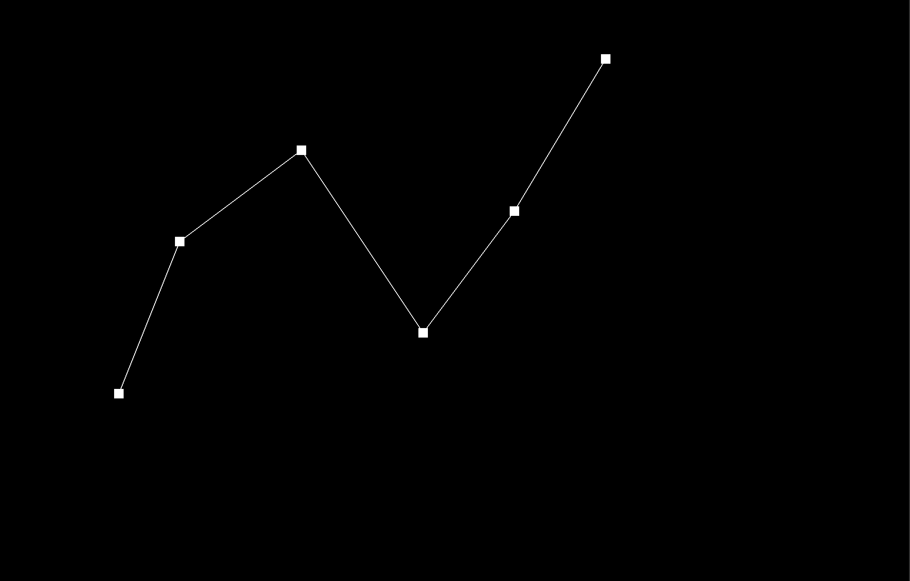
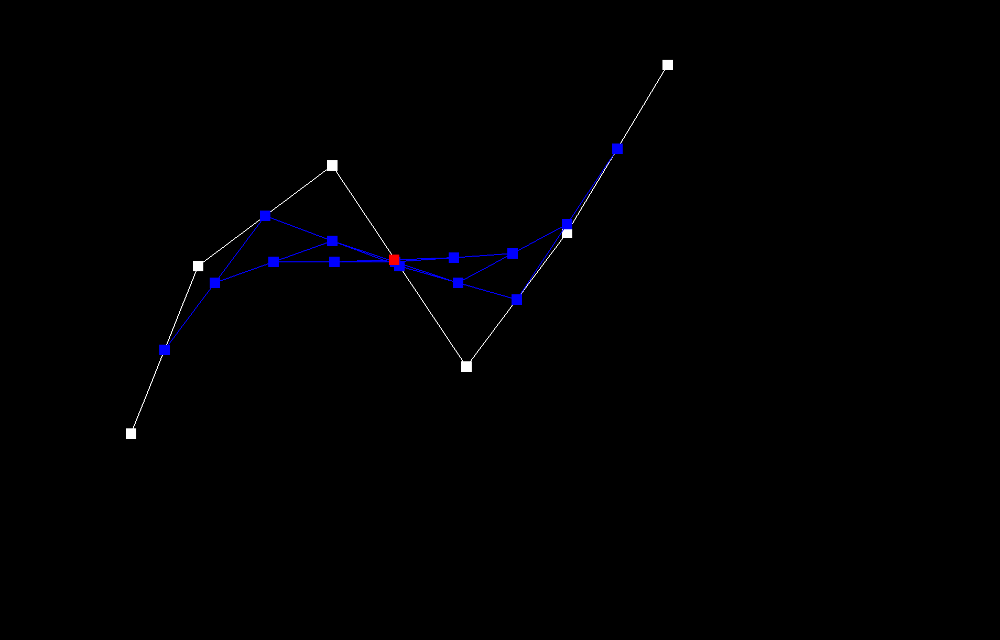
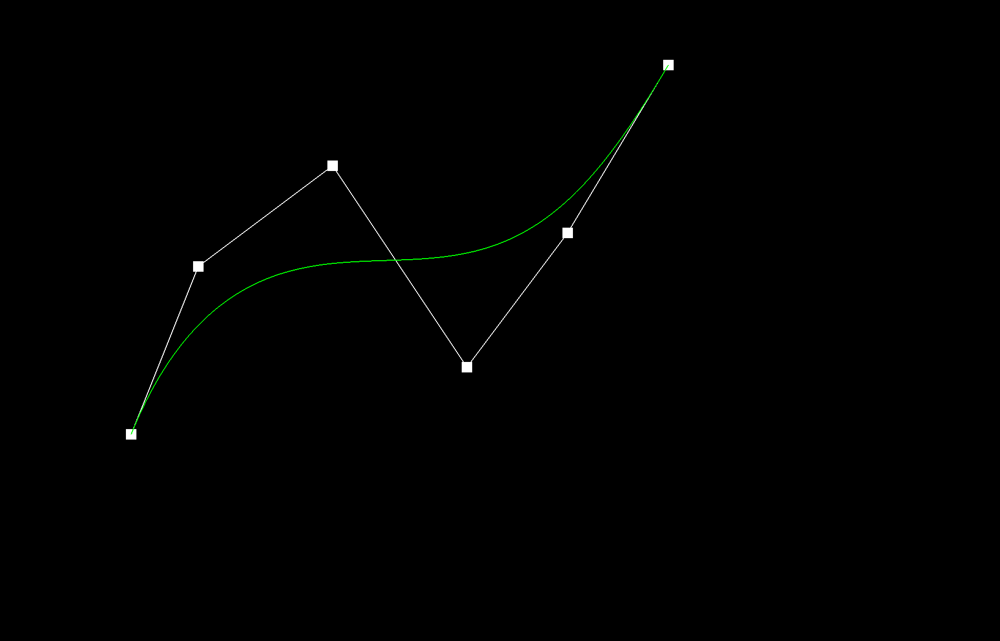
I created a slightly different Bezier curve by dragging the original control
points to new positions. After changing the control point layout,
I adjusted the parameter t using mouse scrolling, which moved the
evaluated point to a different location along the curve and changed the
intermediate de Casteljau construction.
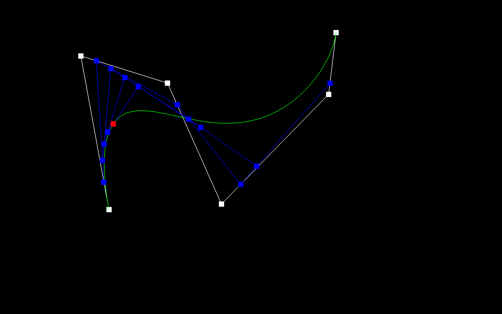
de Casteljau’s algorithm extends from Bezier curves to Bezier surfaces by
applying the same repeated linear interpolation process in two parametric
directions, usually u and v. Instead of a single list of
control points, a Bezier surface is defined by a 2D grid of control points.
To evaluate a point on the surface, we first evaluate along one direction of
the grid, then evaluate the resulting points along the other direction.
In my implementation, I first wrote evaluateStep, which performs one
level of de Casteljau interpolation on a vector of 3D points. Given a list of
points and a parameter t, it computes a new list where each point is
the linear interpolation of two adjacent input points. This reduces the number
of points by one at each step.
I then implemented evaluate1D, which fully evaluates de Casteljau’s
algorithm on a 1D list of control points by repeatedly calling
evaluateStep until only one point remains. That final point is the
Bezier curve value for the given parameter.
To evaluate the full Bezier patch at (u, v), I apply this 1D evaluation
twice. First, for each row of the control point grid, I evaluate a Bezier
curve at parameter u. This produces one intermediate point per row.
These intermediate points form a new 1D list, and I then evaluate that list
at parameter v. The result is the final point on the Bezier surface.
So overall, my surface evaluation works by reducing the 2D Bezier patch into
a set of intermediate row points using u, and then reducing those
again using v to obtain the final 3D position on the surface.
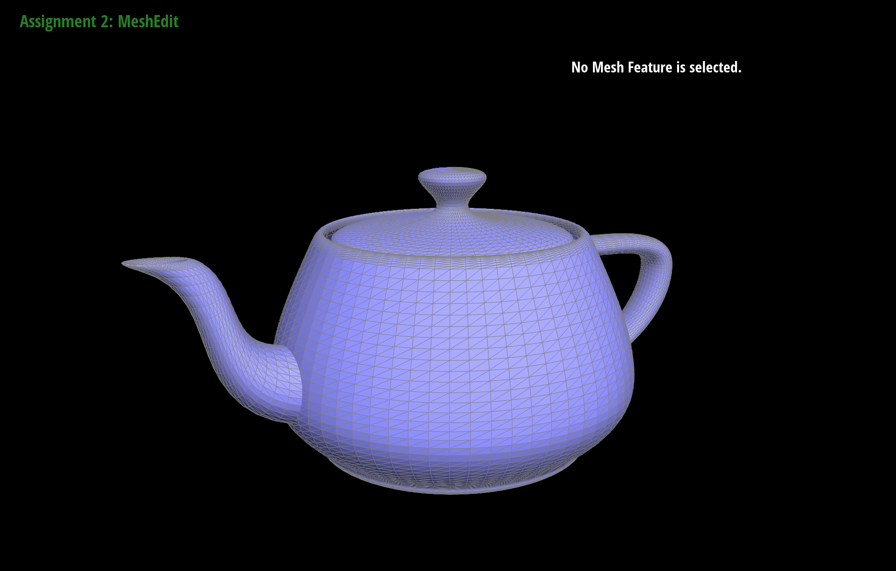
I implemented the area-weighted vertex normal by traversing all faces adjacent
to the vertex using the halfedge structure and summing their contributions to
the normal. Starting from the vertex’s halfedge, I moved around the one-ring
neighborhood with twin()->next() until I returned to the starting
halfedge.
For each neighboring triangle that was not a boundary face, I retrieved its three vertex positions and computed the triangle’s area using half the magnitude of the cross product of two edge vectors. I then multiplied the face normal by this area and added the result to an accumulated normal vector.
This produces an area-weighted average, so larger triangles have a greater influence on the final vertex normal than smaller triangles. After processing all adjacent faces, I normalized the accumulated vector to obtain a unit normal. If the accumulated normal had zero length, I returned the zero vector instead.
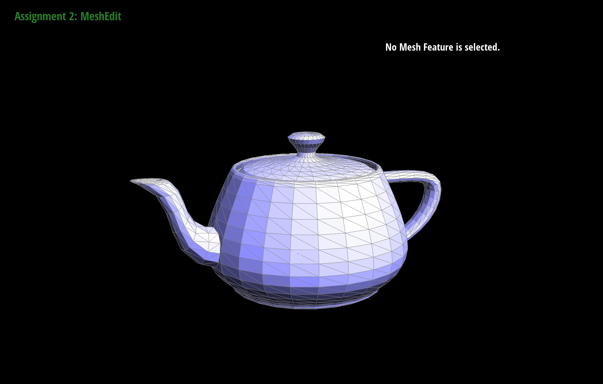
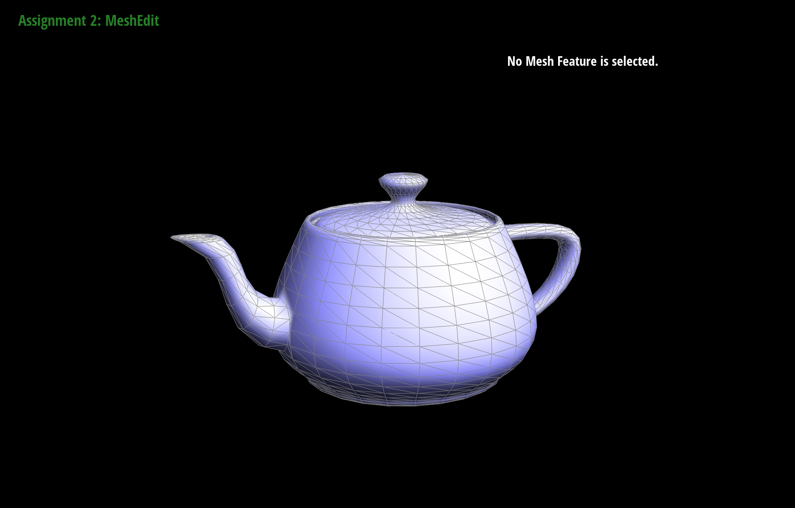
I implemented the edge flip operation by updating the connectivity of the halfedge data structure around the two triangles that share the edge. First, I obtained the halfedge corresponding to the input edge and its twin. If the edge or either adjacent face was on the boundary, I returned immediately without modifying the mesh, since boundary edges should not be flipped.
For a valid edge, I collected the six halfedges surrounding the two triangles,
along with the four involved vertices and the two faces. Flipping the edge
effectively replaces the diagonal between the two triangles. Therefore, the
two halfedges representing the diagonal were reassigned to connect the
opposite pair of vertices, while the surrounding halfedges kept their
vertices but had their next and face relationships
updated to reflect the new triangle cycles.
After updating the connectivity of the halfedges, I also updated the associated pointers stored in the faces, edges, and vertices so that each element referenced a valid halfedge in the new configuration. This ensures that the mesh structure remains consistent after the flip.
One useful debugging trick was to explicitly label and store all halfedges, vertices, edges, and faces involved in the two triangles before modifying anything. This made it easier to reason about the topology and verify that each pointer was updated correctly. I also found it helpful to visually inspect the result after each change to ensure the triangles were connected correctly.
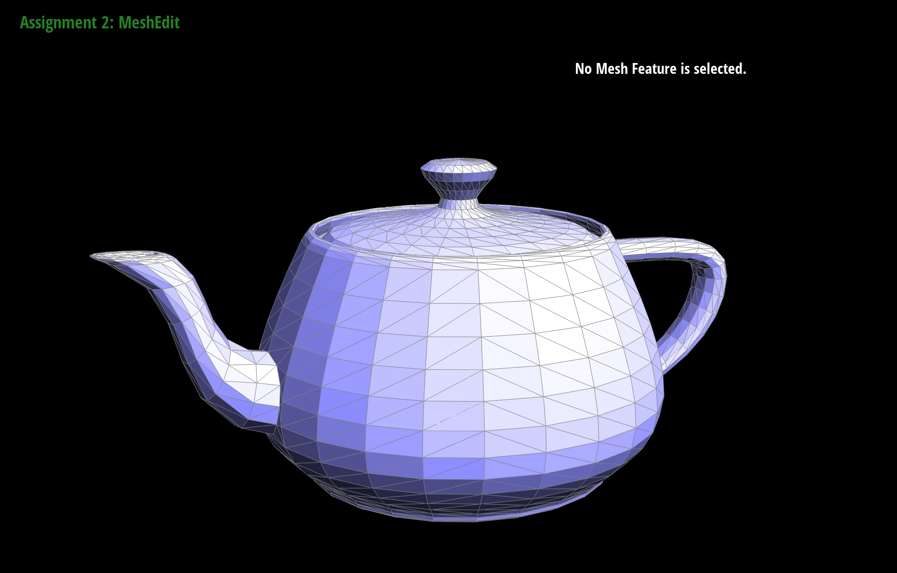
Debugging the edge flip operation required careful reasoning about the
halfedge connectivity. One of the main challenges was making sure that every
pointer in the local neighborhood was updated correctly. Early versions of my
implementation produced incorrect meshes where faces became twisted or edges
appeared disconnected. This usually meant that one of the next,
twin, or vertex pointers had not been updated
correctly.
A helpful strategy was to first draw a diagram of the two triangles involved in the flip and explicitly label all halfedges, vertices, edges, and faces. By matching these labels with the variables in the code, it became much easier to reason about how each pointer should change after the flip. I also made sure to collect all references to the surrounding halfedges and vertices before modifying any connectivity so that I would not accidentally lose track of important elements.
I implemented this function by first inserting a new vertex at the selected edge's midpoint, then connecting it to the 2 opposite vertices. I then updated teh mesh connectivity to split the 2 triangles adjacent to the edge into 4 smaller triangles. This allowed the operation to run in constant time as only 1 vertex is created along with the necessary edges, faces, and halfedges.
For debugging, I used the GUI and alternated between edge flips and splits in the same region. Being able to see the address of each halfedge helped as it allowed me to verify that the connectivity was correct and that the original edge would be split into 2 edges. I also thought I had a bug where edges would disappear when I tried to flip them after splitting. It took me a while to realize that this wasn't necessarily a bug as this only occured when 3 of the 4 vertices of the 2 triangles adjacent to the edge were colinear, which would correctly overlay the flipped edge on top of an existing edge.
|
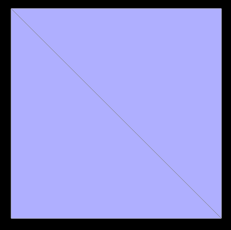 |
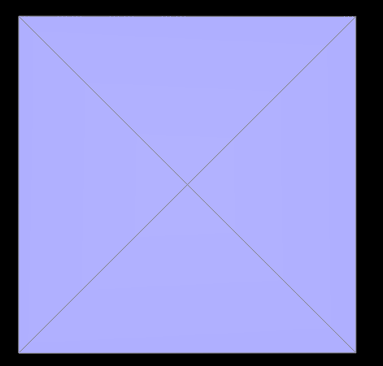 |
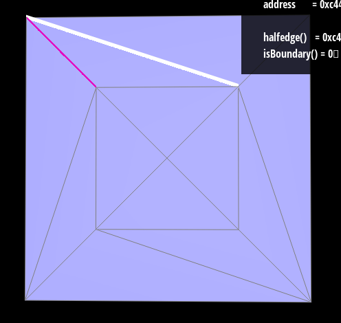 |
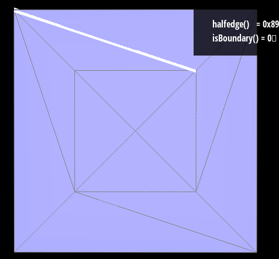 |
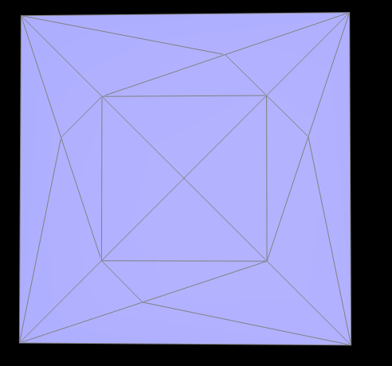 |
I used the 3 steps suggested in the prompt to implement the loop subdivision. I started by computing all the updated positions from the original mesh by doing the following for every vertex: I applied the loop smoothing rule based on its degree and neighbors, and for each original edge I computed the midpoint vertex using 3/8-1/8 weighting with the 2 opposite vertices. I then used 4-1 refinement by splitting every original edge once, marking which vertices and edges were newly created. I then flipped all new edges that connected an old vertex to a new vertex to restore the triangular pattern. I then copied the precomputed positions into the mesh vertices to update the geometry.
For debugging I originally had my program crash/severly lag when trying to subdivide the cube. I realized that this was because I didn't split only the original edges, creating an infinite loop. I fixed this by marking the newly created edges. For the implementation, what helped me most was going through manually and trying to recreate the steps of the algorithm by hand using splits and flips on the teapot mesh. I used the step by step picture in the prompt to guide me through what the mesh should look like after each step, then manually created each step in the GUI, then translated that into code.
In the images below, we have 2 cubes, one default and one with presplits. The presplits were made by splitting every original edge in the default cube once. The images then show both cubes after 1 subdivision and 2 subdivisions. In the default cube, we lose the cube-like shape and its sharp edges/corners almost entirely after the first subdivision. In the presplit cube, we can still clearly see a cube-like shape in the first subdivision and can still see the edges/corners of the cube, although they are much more smoothed out. The default cube becomes slightly more asymetrical after every further subdivision since each face is initially triangulated with a singular diagonal. This diagonal breaks the symmetry, as the 2 vertices on this diagonal are used in a different triangle pattern than the other 2 vertices in the square face. Since the loop subdivision uses weighted averages, the small connectivity differences build up and make the cube asymmetric. To help this, my presplits on every original edge introduced a symmetrical set of triangles within every face. This allowed the loop subdivision to apply the same transforms on every corner.
|
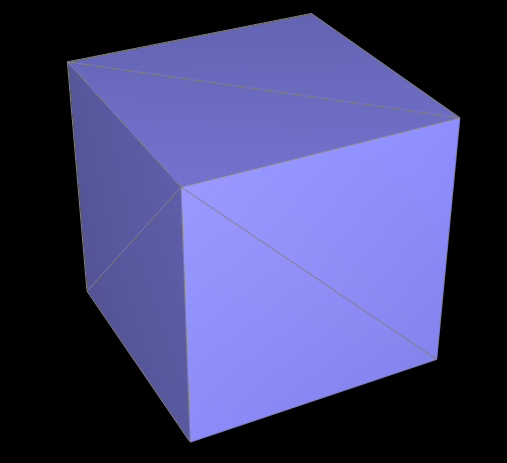 |
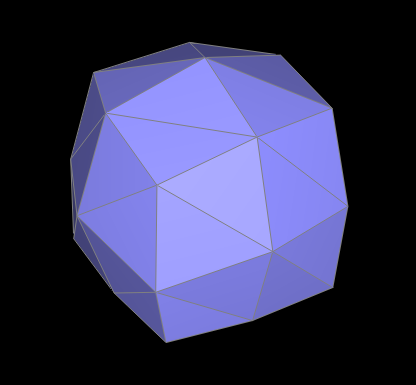 |
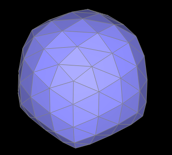 |
|
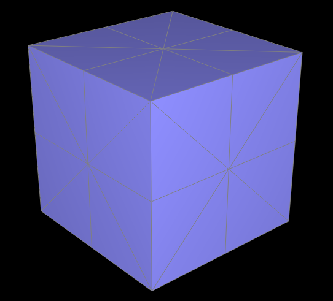 |
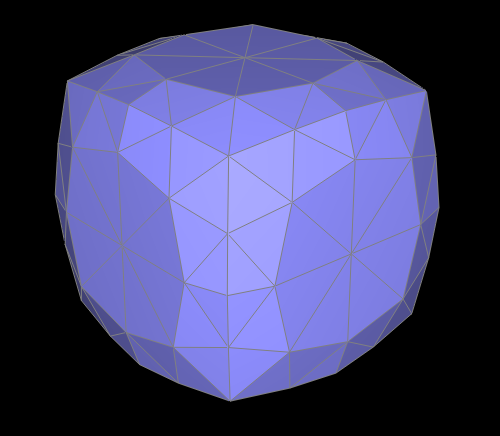 |
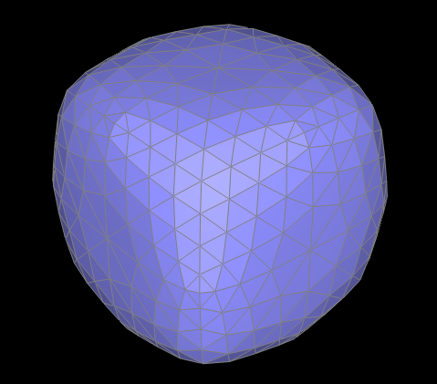 |